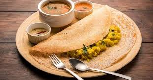
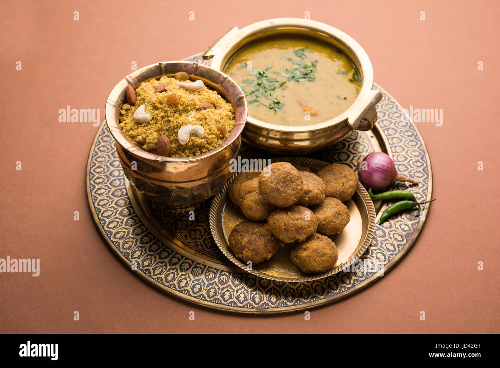
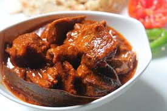

South Indian Dosa
Description: A crispy, thin rice crepe filled with spiced potato mixture, typically served with coconut chutney and sambar.
Dal-Baati-churma
Description: A quintessential Rajasthani dish consisting of baked wheat dumplings (baati) served with spiced lentil curry (dal) and sweet, crushed wheat mixture (churma). A perfect blend of savory and sweet flavors.
Biryani

Description: A fragrant and flavorful rice dish cooked with aromatic spices, marinated meat, and saffron. A true feast for the senses
Paneer Tikka

Description: Marinated paneer (Indian cottage cheese) cubes grilled to perfection, often served as a starter or snack
Rogan Josh
Description: A hearty Kashmiri curry made with tender lamb cooked in a rich, aromatic gravy of yogurt and spices.